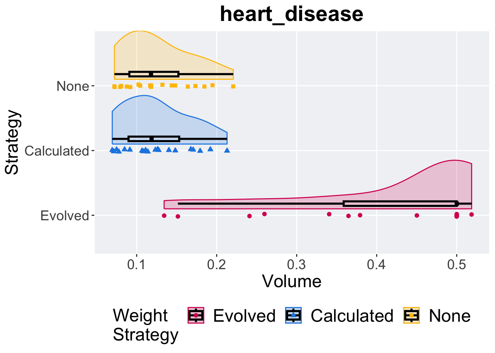

Chapter 3 Heart Disease
Here we report the hypervolume achived by evaluating the performance of each solution wihtin the Pareto front on the test set of the heart disease dataset.
3.2 Hypervolume
ggplot(data, aes(x = exp, y = hv, color = exp, fill = exp, shape = exp)) +
geom_flat_violin(position = position_nudge(x = .1, y = 0), scale = 'width', alpha = 0.2, width = 1.5) +
geom_boxplot(color = 'black', width = .07, outlier.shape = NA, alpha = 0.0, size = 1.0, position = position_nudge(x = .16, y = 0)) +
geom_point(position = position_jitter(width = 0.02, height = 0.0001), size = 1.5, alpha = 1.0) +
scale_y_continuous(
name="Volume",
) +
scale_x_discrete(
name="Population Size"
)+
scale_shape_manual(values=SHAPE)+
scale_colour_manual(values = cb_palette, ) +
scale_fill_manual(values = cb_palette) +
ggtitle(TASKS[1])+
p_theme + coord_flip()